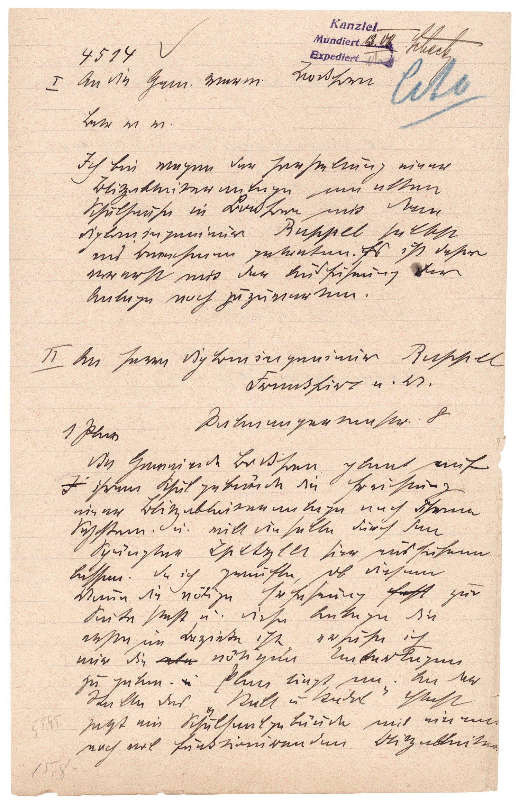

StA München, LRA, 146806



Kommentar
Editor: magdalena.weileder@textgrid.de
Archiv: StA München
Bestand: LRA
Signatur: 146806
Ort: Erding
Datum: 1911 Juli 13
Schlagwort: Akt
Schwierigkeitsgrad: schwer
Kurzbetreff:
Konzept für zwei Schreiben des Bezirksamts Erding
Konzept für zwei Schreiben des Bezirksamts Erding
Schreiberhände:
- Ausgangsstempel (S1)
- Bearbeitungsvermerke von verschiedenen Händen (S2)
- Schreiber des Bezirksamts Erding (S3)
Kommentar:
Das Stück liegt einem Akt des königlichen Bezirksamts Erding bei, in dem es um die Anbringung eines Blitzableiters nach dem System des Diplomingenieurs Ruppel am Schulhaus von Bockhorn geht. Auf dem Blatt werden untereinander je ein Schreiben an die Gemeindeverwaltung Bockhorn und den Diplomingenieur konzipiert, oben rechts wurde ein Dringlichkeitsvermerk angebracht (Z. 6: Cito).
Das Konzept ist in Kurrent verfasst, Namen werden in lateinischer Schreibschrift geschrieben. Der Stempel oben rechts zeigt Antiqua-Druckschrift.
Die Konzeptschrift ist vor allem im zweiten Teil oft undeutlich, einzelne Streichungen und Korrekturen sind festzustellen. Viele Buchstaben sind nur aus dem Zusammenhang zu unterscheiden: a und g der Kurrent sind oben offen und teilweise ähnlich dem relativ gesperrt geschriebenem e, das große E ähnelt langem s (Z. 25: Erfahrung) oder f (Z. 20: Errichtung). Sehr ähnlich sind sich auch h und langes s, p und g (z.B. Z. 11: diplomingenieur), sowie v und w, die in Z. 7 nicht voneinander zu unterscheiden sind (w(ie) v(or) ). Häufig fehlen die t-Balken, insbesondere bei der st-Ligatur. Auch di (z.B. Z. 19: die) und tz (z.B. Z. 9: Blitzableiter) werden ligiert.
Das Stück liegt einem Akt des königlichen Bezirksamts Erding bei, in dem es um die Anbringung eines Blitzableiters nach dem System des Diplomingenieurs Ruppel am Schulhaus von Bockhorn geht. Auf dem Blatt werden untereinander je ein Schreiben an die Gemeindeverwaltung Bockhorn und den Diplomingenieur konzipiert, oben rechts wurde ein Dringlichkeitsvermerk angebracht (Z. 6: Cito).
Das Konzept ist in Kurrent verfasst, Namen werden in lateinischer Schreibschrift geschrieben. Der Stempel oben rechts zeigt Antiqua-Druckschrift.
Die Konzeptschrift ist vor allem im zweiten Teil oft undeutlich, einzelne Streichungen und Korrekturen sind festzustellen. Viele Buchstaben sind nur aus dem Zusammenhang zu unterscheiden: a und g der Kurrent sind oben offen und teilweise ähnlich dem relativ gesperrt geschriebenem e, das große E ähnelt langem s (Z. 25: Erfahrung) oder f (Z. 20: Errichtung). Sehr ähnlich sind sich auch h und langes s, p und g (z.B. Z. 11: diplomingenieur), sowie v und w, die in Z. 7 nicht voneinander zu unterscheiden sind (w(ie) v(or) ). Häufig fehlen die t-Balken, insbesondere bei der st-Ligatur. Auch di (z.B. Z. 19: die) und tz (z.B. Z. 9: Blitzableiter) werden ligiert.
Entzifferung
(Absatz Beginn)
1 (Ausgangsstempel:) Kanzlei(Wechsel des Schriftsystems)(Bearbeitungsvermerke von verschiedenen Händen:) –
2 (Ausgangsstempel:) Mundiert(Wechsel des Schriftsystems)(Bearbeitungsvermerke von verschiedenen Händen:) 13.07.Scheck(Wechsel des Schriftsystems).
3 (Ausgangsstempel:) Expediert(Wechsel des Schriftsystems)(Bearbeitungsvermerke von verschiedenen Händen:) [Namenszeichen]
4 (Schreiber des Bezirksamts Erding:) 4514
5 I An die Gem(einde) Verw(altung) Bockhorn
6 (Bearbeitungsvermerke von verschiedenen Händen:) Cito(Wechsel des Schriftsystems)
7 (Schreiber des Bezirksamts Erding:) Betr(eff) w(ie) v(or)
8 Ich bin wegen der herstellung einer
9 Blitzableiter anlage am alten
10 Schulhause in Bockhorn mit dem
11 diplomingenieur Ruppel(Wechsel des Schriftsystems) selbst
12 ins Benehmen getreten. Es ist daher
13 vor erst mit der Ausführung der
14 Anlage noch zu zu warten.
15 II An herrn diplomingenieur Ruppel(Wechsel des Schriftsystems)
16 Frankfurt a(m) M(ain)
17 Palmengartenstr. 8
18 1 Plan
19 die Gemeinde Bockhorn plant auf
20 I(getilgt) ihrem Schulgebäude die Errichtung
21 einer Blitzableiteranlage nach Ihrema)
22 System u(nd) will die selbe durch den
23 Spängler Spetzler(Wechsel des Schriftsystems) hier ausführen
24 lassen. da ich zweifle, ob diesem
25 Man(n)e die nötige Erfahrung fehl(getilgt) zur
26 Seite steht, u(nd) diese Anlage die
27 erste im Bezirke ist, ersuheb) ich
28 mir die etw(getilgt) nötigen Unterlagen
29 zu geben. u(getilgt) Plan liegt an. An der
30 Stelle des „Stall u(nd) Stadel“ steht
31 (Bearbeitungsvermerke von verschiedenen Händen:) 5595(Links nachgetragener Text)(Schreiber des Bezirksamts Erding:) jetzt ein Schulsaalgebäude mit einem
32 noch vol funktionirenden Blitzableiter
33 (Bearbeitungsvermerke von verschiedenen Händen:) 15.8.(Links nachgetragener Text)
(Absatz Ende)
a) korrigiert aus "ihrem"(Textzitat)
b) "c"(Textzitat) fehlt
Transkription
(Absatz Beginn)
1 (Ausgangsstempel:) Kanzlei(Wechsel des Schriftsystems)(Bearbeitungsvermerke von verschiedenen Händen:) –
2 (Ausgangsstempel:) Mundiert(Wechsel des Schriftsystems)(Bearbeitungsvermerke von verschiedenen Händen:) 13.07. Scheck(Wechsel des Schriftsystems)
3 (Ausgangsstempel:) Expediert(Wechsel des Schriftsystems)(Bearbeitungsvermerke von verschiedenen Händen:) [Namenszeichen]
4 (Schreiber des Bezirksamts Erding:) 4514
5 I. An die Gemeindeverwaltung Bockhorn
6 (Bearbeitungsvermerke von verschiedenen Händen:) Cito(Wechsel des Schriftsystems)
7 (Schreiber des Bezirksamts Erding:) Betreff wie vor.
8 Ich bin wegen der Herstellung einer
9 Blitzableiteranlage am alten
10 Schulhause in Bockhorn mit dem
11 Diplomingenieur Ruppel(Wechsel des Schriftsystems) selbst
12 ins Benehmen getreten. Es ist daher
13 vorerst mit der Ausführung der
14 Anlage noch zuzuwarten.
15 II. An Herrn Diplomingenieur Ruppel(Wechsel des Schriftsystems)
16 Frankfurt am Main
17 Palmengartenstr. 8
18 1 Plan
19 Die Gemeinde Bockhorn plant auf
20 a) ihrem Schulgebäude die Errichtung
21 einer Blitzableiteranlage nach Ihrem
22 System und will dieselbe durch den
23 Spängler Spetzler(Wechsel des Schriftsystems) hier ausführen
24 lassen. Da ich zweifle, ob diesem
25 Manne die nötige Erfahrung b) zur
26 Seite steht, und diese Anlage die
27 erste im Bezirke ist, ersuhec) ich
28 mir die d) nötigen Unterlagen
29 zu geben. e) Plan liegt an. An der
30 Stelle des „Stall und Stadel“ steht
31 (Bearbeitungsvermerke von verschiedenen Händen:) 5595(Links nachgetragener Text)(Schreiber des Bezirksamts Erding:) jetzt ein Schulsaalgebäude mit einem
32 noch vol funktionirenden Blitzableiter […]
33 (Bearbeitungsvermerke von verschiedenen Händen:) 15.8.(Links nachgetragener Text)
(Absatz Ende)
a) durch Durchstreichen getilgt: "I"(Textzitat)
b) durch Durchstreichen getilgt: "fehl"(Textzitat)
c) "c"(Textzitat) fehlt
d) durch Durchstreichen getilgt: "etw"(Textzitat)
e) durch Durchstreichen getilgt: "u"(Textzitat)